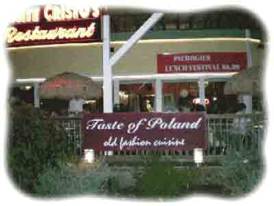

Travel to Lake George Travel to Lake George |
Home >> Things to do >> Restaurants
Lake George Pancake House77 Canada Street, Lake George, NY 12845http://www.lakegeorgepancakehouse.homestead.com Visit Lake George Pancake House Family Restaurant and try our delicious breakfast menu and breakfast express. Once you're here choose from over a dozen breakfast items, traditional dishes, sides and pastries. Save money and time while enjoying your breakfast! | |
 |
Shoreline Cruises & Entertainment2 Kurosaka Lane, Lake George, NY 12845http://www.lakegeorgeshoreline.com Enjoy casual or fine dining at the Shoreline Restaurant overlooking beautiful Lake George. Relax on our covered deck and choose from a host of fabulous American cuisine menu items. A full service bar, good food and an unforgettable view! |
The Montcalm Restaurant1415 State Route 9, Lake George, NY 12845http://menumart.com/montcalm/ The Montcalm is a Family owned business for 50 years featuring: Fresh Seafood, Prime Ribs, Great Steaks, Hearty Soups, Veal, Pasta, Seasonal and Daily Specials. We make everything from scratch and are very proud of our "Celebrated Bake Shop," Wonderful Service and Great Drinks. | |
SJ Garcia's192 Canada Street, Lake George, NY 12845http://sjgarcias.com Enjoy Authentic Mexican food at SJ Garcia's! | |
Adirondack Winery & Tasting Room285 Canada Street, Lake George, NY 12845http://www.adirondackwinery.com Adirondack Winery, located in the heart of Lake George Village, is the region's first Micro Winery! We are proud to offer an impressive selection of wines hand-crafted on premises by our own wine maker. | |
|  | Taste of Poland259 Canada StreetLake George, NY 12845 518-668-4386 http://www.taste-of-poland.com Authentic Polish cuisine served in a world-class restaurant. |
The Log Jam Restaurant1484 US Rte. 9, Lake George, NY 12845http://www.logjamrestaurant.com Step into our authentic log cabin on Route 9 in Lake George to enjoy amazing steak, seafood and other delicious favorites in a rustically romantic setting. Stop in for lunch or dinner in the beautiful Adirondacks. |